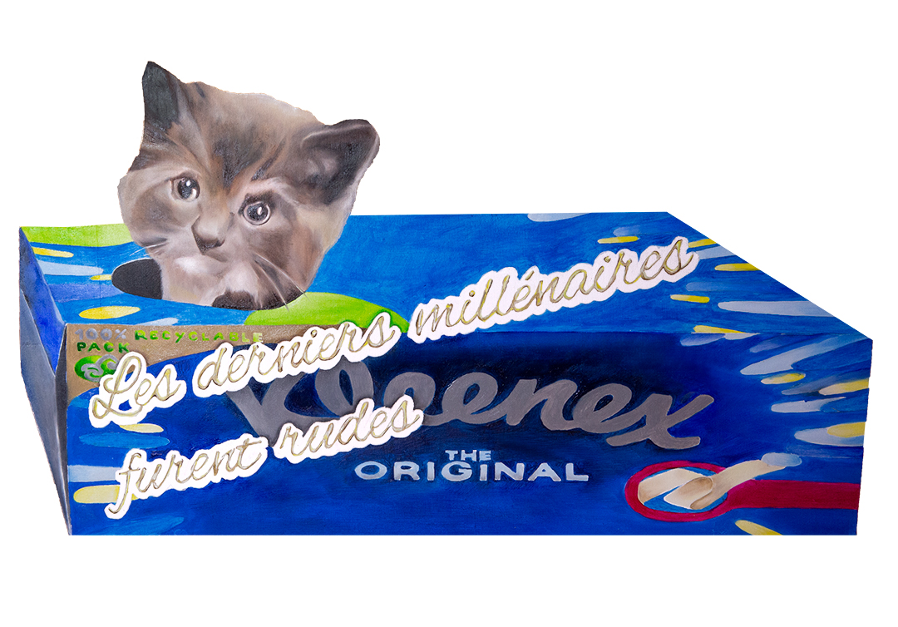
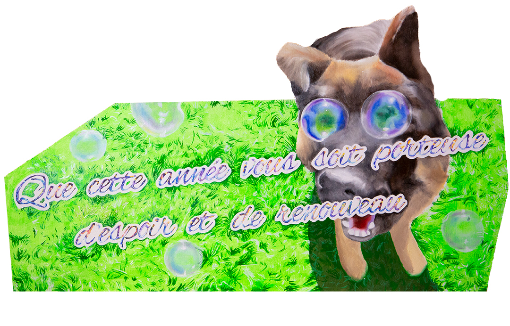

Le Seul Risque c’est la Catastrophe
Projet en cours
Je viens d’achever un court métrage dans lequel Arielle Dombasle interprète une femme qui esthétise sa vie jusqu’à l’extrême. Les décors mêlant toiles peintes et jungle artificielle, les costumes extravagants et la stylisation de l’image puisent leur inspiration dans les films Bollywood qui me passionnent depuis vingt ans.
Le Seul Risque, c’est la Catastrophe (2023) Vidéo, 27 min
Partant de ce court-métrage, j’ai commencé à peindre des tableaux
reprenant les codes visuels des affiches traditionnelles de Bollywood,
au croisement des «shaped canvas» que j’affectionne dans l’art
contemporain, et des affiches indiennes dont les formes dépassent du
cadre.
J’ai poursuivi la série de tableaux qui s’est peu à peu éloignée du film,
chaque nouveau tableau traitant d’une thématique indépendante.
Certaines peintures évoquent des films imaginaires, d’autres
s’affranchissent complètement de toute référence cinématographique.
The Beauty of flowers, jungles and meadows (2023)
Huile sur bois découpé, 110cm x 200 cm
My coroles are starving (2023)
Huile sur bois découpé, 140 0cm x 200 cm
Le Panthéon (2023)
Huile sur bois découpé, 97cm x 180 cm
Tel le Phoenix (2025)
Huile sur bois découpé, 115cm x 115 cm
Amour (2024)
Huile sur bois découpé, 160cm x 115 cm
The seeds (2023)
Huile sur bois découpé, 28cm x 28 cm
Face A :
Les derniers millénaires furent rudes (2025)
Huile sur bois découpé, 38cm x 75 cm
Face B :
Que cette année vous soit porteuse d’espoir et de renouveau (2025)
Huile sur bois découpé, 38cm x 75 cm
Vue de l’exposition collective Equinoxe Sunrise (2025)
Nabuzardan, Quais d’Ivry, France